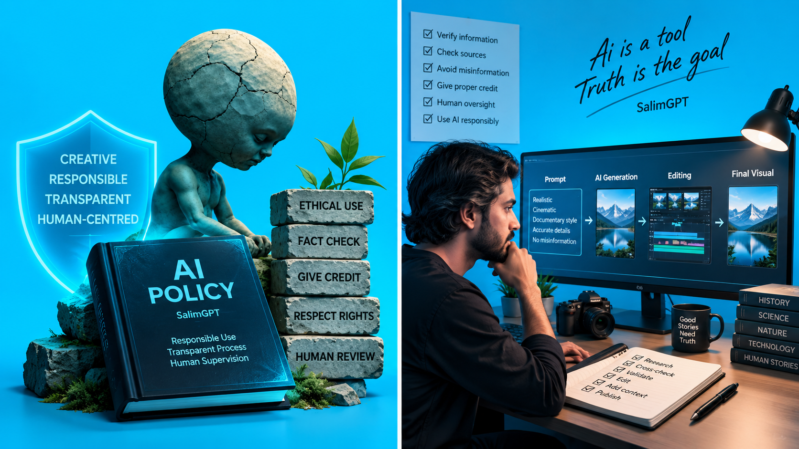

Research Assistance
Topic exploration, terminology, search direction, and research organization.
SalimGPT may use Artificial Intelligence in documentary production for research assistance, topic exploration, language support, synthetic narration, image generation, prompt development, image-to-video, generative footage, visual concepts, workflow optimization, and other production tasks. However, final factual judgment, narrative direction, visual selection, editing decisions, and publication control remain under human authority.

SalimGPT's production philosophy is to use technology under the direction of research, storytelling, and human judgment. No AI system independently acts as the documentary director, fact-checker, or final publisher.
AI is a powerful production tool. It can accelerate research, transform language, generate images or footage, create synthetic narration, and simplify repetitive workflow tasks.
But SalimGPT does not assume that AI output is always accurate, unbiased, complete, or contextually correct.
Human direction → AI assistance → human verification → final publication.Not every documentary is required to use the same AI tool or the same workflow. Usage may vary depending on the topic and production needs.
Topic exploration, terminology, search direction, and research organization.
Outline development, language refinement, structure analysis, and draft support.
Assistance with understanding foreign-language sources or creating working translations.
AI-generated narration based on the final script.
Creating historical, conceptual, or illustrative visuals.
Text-to-video or image-to-video illustrative footage.
Instructions for scenes, cameras, motion, lighting, and visual details.
Data organization, pattern discovery, and explanatory support.
Scene breakdowns, asset planning, and workflow support.
Assistance in identifying consistency, wording, structure, and possible issues.
At the beginning of a documentary topic, AI may be used to create a working map of key terms, historical periods, possible source types, researchers, institutions, archives, or related events.
This may save time when identifying research direction. However, AI-generated answers may contain hallucinations, outdated facts, oversimplification, or fabricated citations.
Therefore, before an important factual claim is included in the final script, SalimGPT aims to verify it independently using available original, institutional, academic, or other reliable sources whenever possible.
The fact that an AI model confidently states something does not prove that the information is reliable. Generative models can produce incorrect references, nonexistent publications, or inaccurate dates.
Therefore, important factual statements should be traced back to original references or independent evidence beyond the AI response.
View Fact-Checking MethodsDuring script development, AI may provide working assistance with outline testing, sentence restructuring, language refinement, translation, alternative explanations, or simplifying complex concepts.
However, the final documentary script is reviewed and restructured according to source material, research understanding, narrative planning, and SalimGPT's editorial direction.
SalimGPT's production model does not rely on copying AI-generated wording directly into final narration without verification.
SalimGPT documentaries may use synthetic or AI-generated narration. Before voice generation, the final script is prepared and reviewed under human editorial control.
When synthetic voice is used, pronunciation, sentence breaks, pacing, pauses, emphasis, and listening clarity are reviewed. If problems are found, narration segments may be regenerated or edited.
The voice may be artificial, but the information, interpretation, and narrative direction remain part of SalimGPT's editorial responsibility.

AI-generated images or generative footage may be used for historical events, conceptual explanations, ancient environments, or scenes where original footage does not exist.
Before generating a scene, prompt design may consider topic research, available references, historical context, environment, clothing, objects, camera perspective, lighting, and movement.
AI output is not automatically final. If visual inconsistencies, inaccurate details, unwanted objects, unrealistic motion, or misleading context appear, the output may be rejected, regenerated, or modified.
Visual & Media Source PolicyNew illustrative images generated from prompts.
Generative footage created from text instructions.
Motion footage created from a static image.
Refinement and variation of existing generated visuals.
Historical or conceptual location visualization.
Concept, layout, or explanatory graphic support.
If real footage of a historical event or environment does not exist, AI-generated scenes may be used, but their purpose should be explanation and visualization.
If an AI-generated reconstruction is used in a way that could cause viewers to mistake it for historical camera footage, an authentic photograph, or real documentary evidence, appropriate contextual clarity is important.
It may generate nonexistent or incorrect information.
It may cite incorrect papers, authors, or sources.
It may present old information as if it were current.
It may reflect patterns or biases in training data.
It may oversimplify complex historical context.
Objects, anatomy, text, or historical details may be wrong.
Generative footage may contain unrealistic movement.
Incorrect information may still be presented in confident language.
No matter how extensively AI is used in SalimGPT's production workflow, authority to publish the final documentary does not belong to an AI system.
Human review is required to determine which claims are acceptable, which sources are sufficiently credible, which generated images are contextually appropriate, which footage may be misleading, which narration should remain, which scenes should be removed, and when the final edit is ready for publication.
SalimGPT's overall creative, research, and editorial direction is managed by Mohammad Salim.
Uploading or modifying a third-party copyrighted image with an AI tool does not automatically eliminate the original rights attached to it.
When using another party's image or footage, applicable permission, license terms, source conditions, and relevant rights must be considered separately.
Likewise, usage rights and commercial use of AI-generated assets may depend on the terms of the service used and applicable law.
Ownership & Copyright PolicyAI visuals and footage created through SalimGPT's own research, scene concepts, prompt design, generation direction, selection, modification, and editing may be stored as part of SalimGPT's production library.
These assets may be created and editorially selected for specific documentary narrative purposes.
However, the copyright status of purely AI-generated output is not identical in every jurisdiction. Therefore, SalimGPT does not treat the statements “created with AI” and “protected by exclusive copyright under law” as automatically equivalent.
A real person should not be shown saying something they never said.
If an illustrative recreation is used, narrative context should remain clear.
A person's identity should not be used to create deceptive endorsements or fabricated evidence.
Synthetic visuals should be used for explanation, not deception.
AI-assisted translation may be used to understand foreign-language reports, articles, or documents.
However, machine translation may lose nuance in legal, historical, scientific, or sensitive wording. When necessary, original wording, alternative translations, or context may be reviewed again.
The necessity and risk should be considered before submitting personal or sensitive information to an AI service.
Applicable rights should be considered before uploading restricted source material to any tool.
Avoiding unnecessary sharing of private data simply for convenience is considered good practice.
SalimGPT publishes information about its production process and AI policy to give audiences a clearer understanding of how documentaries are created.
Synthetic narration, AI-generated illustrative images, or generative footage may be part of production. Where disclosure is important for audience understanding, SalimGPT aims to maintain contextual transparency.
Different AI tools, models, or services may be used depending on production needs, and those tools may change over time.
The “GPT” in SalimGPT does not indicate official ownership, endorsement, or partnership with any specific AI provider. SalimGPT is an independent documentary media initiative.
Generative AI technology, platform terms, copyright practices, and synthetic media standards are changing rapidly.
Therefore, SalimGPT's AI policy may be updated as necessary to reflect new technology, production experience, platform policies, and applicable legal developments.
SalimGPT's topic selection, research direction, script review, prompt planning, AI output selection, visual editing, final factual review, and overall creative and editorial control of publication are managed by Mohammad Salim.
AI can expand production capabilities; accountability and final responsibility remain with humans.
Learn About the DirectorSalimGPT may use AI as a powerful tool to improve creativity, speed, visualization, and production efficiency.
But the factual quality, visual context, ethical judgment, source responsibility, and editorial integrity of the final documentary are not handed over to AI.
Human-led. AI-assisted. Evidence-aware. Editorially responsible.